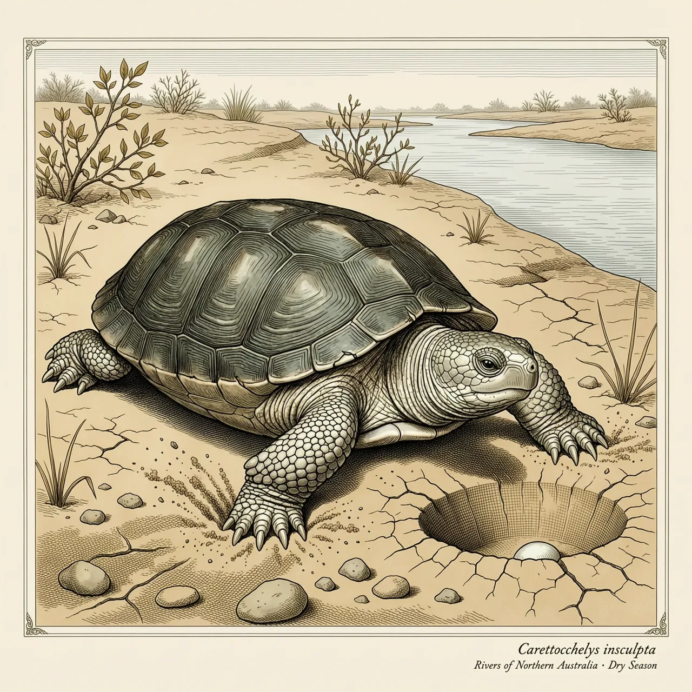
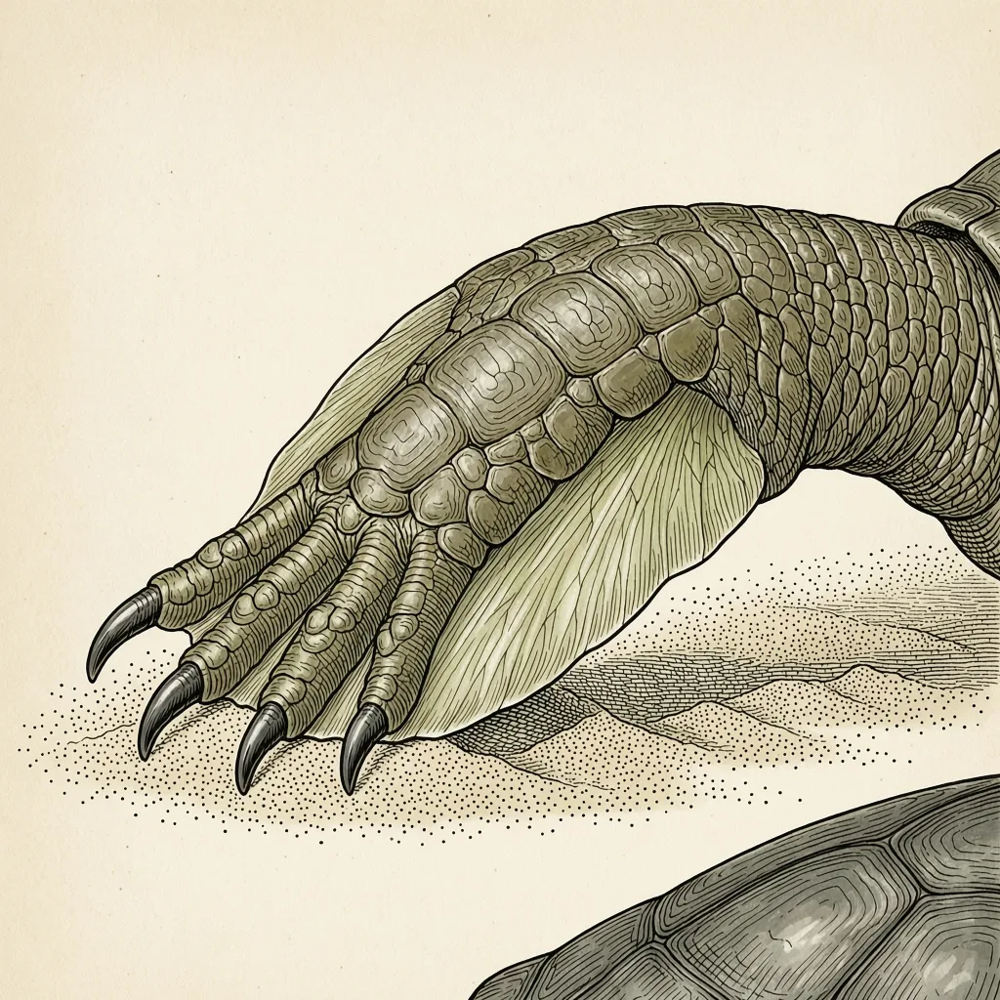

猪鼻龟分布在澳大利亚北部、印尼与巴布亚新几内亚的淡水水域，吻部前突像猪鼻，趾间有脚蹼。它是唯一完全水栖的淡水龟类，雌性旱季上岸产卵于沙质河岸；胚胎在卵内休眠，靠气压骤降触发同期孵化。因为长相独特，它被宠物市场大量捕获。
浑浊的河水里，一只壳长可达70厘米、体重超过20公斤的龟用带蹼的四肢划水前行，向前突出的吻像个猪鼻子，这是猪鼻龟名字的来历。它分布在澳大利亚北部、印尼和巴布亚新几内亚的淡水水域，是唯一完全水栖的淡水龟类，除了雌性上岸产卵，几乎一生不着陆。背甲是灰色或橄榄色的革质皮肤，表面有纹理，而不是一块块分开的角质盾片；腹甲呈奶油色，骨甲之下保留着与甲壳相连的强壮骨架。这套构造在淡水龟里绝无仅有，模样反而更接近海龟。
旱季，雌性爬上沙质河岸挖巢产卵，之后回到水里，而卵的发育并不立刻开始。胚胎在卵内保持休眠状态，一直等到条件合适才破壳而出。触发信号是气压的突然下降，那意味着一场风暴即将到来。于是同一批卵里的幼龟几乎在同一时间孵化，一齐挖开沙子的表面下水，而不是各自在不对的日子里爬出来。
让它登上世界自然基金会2004年公布的十大濒危物种名单的，不是餐桌，而是客厅。凭借一张像猪的脸，猪鼻龟成了宠物市场的新宠，本来就稀少的野生个体被大量捕捞。人工繁殖补不上这个缺口：它生长缓慢，成体之间攻击性很强、会互相攻击，配对需要极大的空间，饲养者很少能让它们成功繁殖；圈养个体又容易在饲养环境里产生压力、容易生病，甚至连进食都出问题。于是流通的仍多为野生个体。它已被列入《濒危野生动植物种国际贸易公约》附录二，出口和贸易受到限制。
